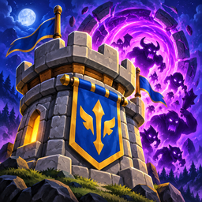

소환 디펜스
고객지원
오류나 게임 이용에 관한 문의는 alyduho984530@gmail.com로 보내 주세요. 기기 모델, 운영체제 버전, 앱 버전, 문제가 생긴 상황을 함께 알려 주시면 확인에 도움이 됩니다. 비밀번호나 결제 정보는 보내지 마세요.
저장 기록
계정 가입은 없으며 게임 기록은 기기에 저장됩니다. 기록은 휴대폰의 일반 백업(iCloud·Google 백업)에 함께 담길 수 있습니다. 앱을 지우거나 앱 데이터를 초기화하면 기록을 잃을 수 있습니다.
광고와 결제
보상형 광고와 전면 광고(Google AdMob)가 있습니다. 보상형 광고는 직접 눌렀을 때만 재생되고, 전면 광고는 전투가 끝난 뒤 가끔 나오며 “광고 제거” 상품을 사면 나오지 않습니다. 인앱 결제(보석, 스타터 팩, 광고 제거, 종족 통합 번들, 프리미엄 시즌 패스)는 Apple App Store 또는 Google Play 계정으로 진행되며, 청약 철회와 환불은 각 스토어 정책을 따릅니다. 구독 상품은 없습니다. 영구 상품(광고 제거·종족 통합 번들·시즌 패스·스타터 팩)은 게임 설정의 “구매 복원”으로 되찾을 수 있습니다. 상자의 확률은 게임 상점의 “확률 정보”와 확률 정보 페이지에 있습니다.
Support (English)
For bugs or questions, email alyduho984530@gmail.com with your device model, OS version, app version and what happened. Never send passwords or payment details. Progress is saved on the device (no accounts) and may be included in your phone's regular backup. The game has rewarded and interstitial ads (Google AdMob); rewarded ads play only when you choose to watch, and interstitials (shown occasionally after battles) are removed by the Remove Ads purchase. In-app purchases go through the App Store or Google Play and refunds follow each store's policy. There are no subscriptions. Permanent purchases (Remove Ads, Race Bundle, Season Pass, Starter Pack) can be restored from Settings → Restore Purchases. Chest drop rates: in the shop and on the Odds page.